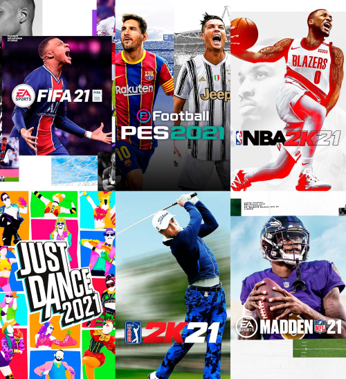

Bienvenido Player 1
Felicidades eres el estilo de videojuego Deporte

Caracterizado como él juego de mayor furia y desprecio hacia la gente.Te la pasas rompiendo mandos por perder una partida, y no te importa nada.
Aun asi, son tan populares que nadie los puede dejar, y siempre van a tener una comunidad muy grande.
Dentro de esta categoria, se encuentran juegos como FIFA, NBA, PES, etc.